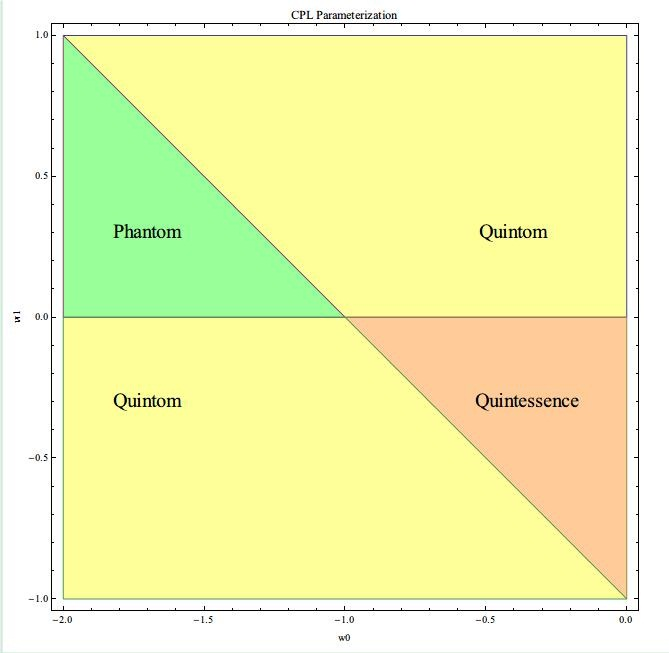

关于暗能量那些稀奇古怪的名字
唯象的来看，暗能量有些诡异的名字，可以列一下主要的[1]：
- Quintessence
- Phantom
- Quintom
Quintessence 就是 the fifth element, 或者说是 fifth essence. 有部电影就是讲这个的(The Fifth Element)。
Phantom 就不用说了，到处出现的一个词，游戏上，小说中，电影中。差不多等于 Ghost 吧，不过好像比 Ghost 更加有亲和力一点。
Quintom 是个自造词，没什么历史渊源，是将上面两者结合起来的。是不是可以理解成 The ghost who can use the power of the fifth essence 啊，哈哈～
那，这些都是什么意思呢？
这些可以从动力学的角度来看，比如可以写出作用量，然后分析对我们来说最必要的一个量：Equation of State (EoS).
一般而言，我们总可以把 Lagrangian 写成动能项和势能项，也就是说作用量可以一般的写成如下形式：
[A=\int \mathrm d^4 x \sqrt{-g} (X-V)]
其中 (X) 代表动能项，(V) 代表势能项。下面我们来分类。
- Quintessence ：
[X=-\frac{1}{2} \partial_\mu \phi \partial^\mu \phi]
这样可以用经典的变分原理来写出能动张量，然后可以分离出能量密度(\rho)和压强(p)这两个量。[2]
现在引入一个很重要的量，EoS，状态方程。其定义如下：
[w=\frac{p}{\rho}]
这是我们用的状态方程的定义。为什么要这样定义？因为这样可以反映该物质的特定的性质：压强和能量密度的关系。为什么不写成(\rho/p)，因为(p)可能为0。
由此，我们得到 Quintessence 的 EoS ，
[w=\frac{\frac12 \dot\phi^2-V}{\frac12 \dot\phi^2+V}]
如此以来，因为动能项一直是正的，势能项又是负值，所以 Quintessence 的 EoS 有一下特点
[0>w>-1]
很有趣，因为 LCDM 模型所对应的唯象的 EoS 恰好是 -1。所以说 -1 的状态方程很重要，下面可以更清楚的看到这一点。
- Phantom ：
[X=\frac{1}{2} \partial_\mu \phi \partial^\mu \phi]
同样的方法，可以得到 Phantom 的 EoS 为
[w=\frac{\frac12 \dot\phi^2 + V}{\frac12 \dot\phi^2 – V}]
正好是之前的倒数。因此这个应该是：
[w< -1]
- Quintom ：
Quintom 采取了兼容并包的方法，也就是把之前两者都包含进来了：
[X=-\frac{1}{2} \partial_\mu \phi \partial^\mu \phi+\frac{1}{2} \partial_\mu\psi \partial^\mu \psi]
可以得到一个更一般的状态方程
[w=\frac{\frac12 \dot\phi^2-\frac12 \dot\psi^2-V}{\frac12 \dot\phi^2-\frac12 \dot\psi^2+V}]
不出所料，这个状态方程应该是可以穿过 -1 的。
干嘛用的？
为什么要这样分类呢？因为 (w<-1) 和 (0>w>-1) 的暗能量可以带给宇宙不同的命运。可以想象一下，如果暗能量有着很大的呀强，那么同样多的暗能量，可以提供更强烈的加速，因此宇宙撕裂将会更容易出现或者更快出现。相反，我们倒是有可能生活在一个安稳的宇宙中。
因此分成不同的类别来考察他们对宇宙演化的影响是很自然的。
为什么要提到 EoS ？
因为这家伙很直接的影响到我们的宇宙的命运。如何？
我们可以通过 Friedmann 方程来考察宇宙的演化，其中一个比较重要的问题是：我们的宇宙会是一直膨胀下去还是会先膨胀然后坍缩？
把 EoS 的定义带入进来，可以通过1766号文章中的方法来考察背景宇宙的演化。这样就可以知道，不同类型的暗能量，对宇宙的演化的作用不同。比如，Phantom 将会带给我们 big rip，我们的世界将会毁灭，一切都将不复存在。
因为我们不知道暗能量是什么，所以我们也不能准确的知道 EoS 是什么形式。原则上来说，在我们弄清楚暗能量本质之前，只能唯象的把 EoS 参数化。
有个挺有意思的小事情：我们可以把不同方法参数化的 EoS 的相图找到，分成 Phantom, Quintessence 和 Quintom 等区域，这样更加方便的知道这种参数化的覆盖的范围。
比如比较经典的参数化形式 CPL 参数化[3]的。

- 其他的比如 K-essence 之类的，此处不提。 ↩
- 如何做？我们一般定义能量密度(\rho)为 (T^0_0=-\rho)，这个号差无关。如此我们可以通过变分原理求出能动张量的表达式，然后放到这个定义中，既可得到能量密度的表达式。至于压强，因为我们用了理想流体模型，此处就直接定义 (T_{ij}=g_{ij} p)，同样的方法得到压强表达式。此处变分应当认为引力为基本场，因为我们考察的是一个引力体系中的引力场的性质，与一般做法过程稍有区别，结果一致。 ↩
- CPL parameterization, or Chevallier-Polarski-Linder parameterization.[w=w0 + wa \frac{z}{1+z}=w0 + wa (1-a)]这里 (z) 为红移[4]， (a=1/(1+z)) 为 scale factor 。 ↩
- Redshift, same definition as the one in Doppler effect. However it is generalized in Cosmology. Check Wikipedia for more information. ↩

我是冲着怪名字进来的，结果没看懂什么，都是一些积分公式
哈哈，中计了吧~
学校里真的要学那么难的数学？
用到的就得看的～